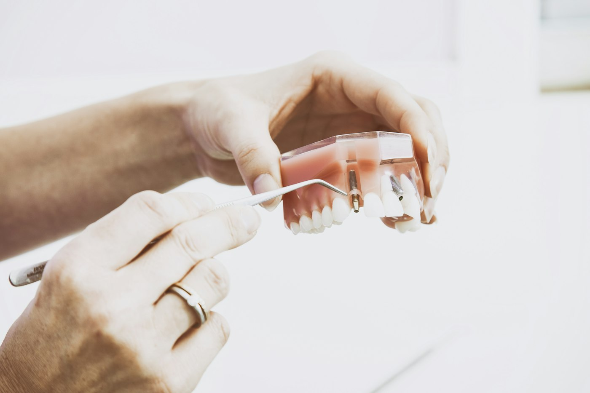
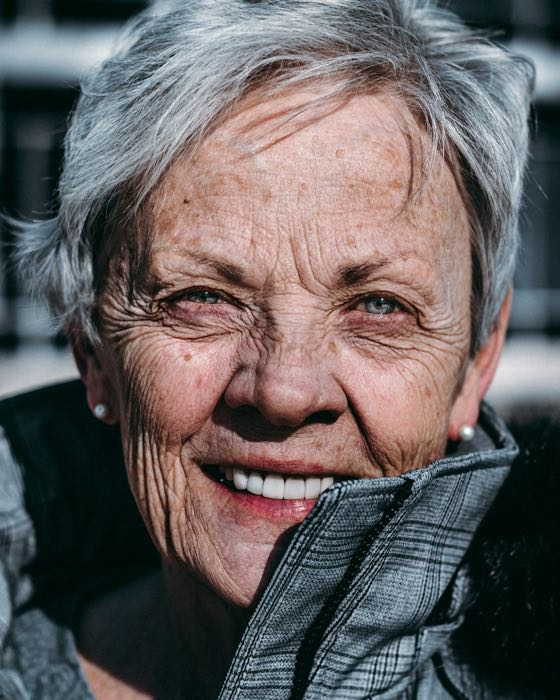
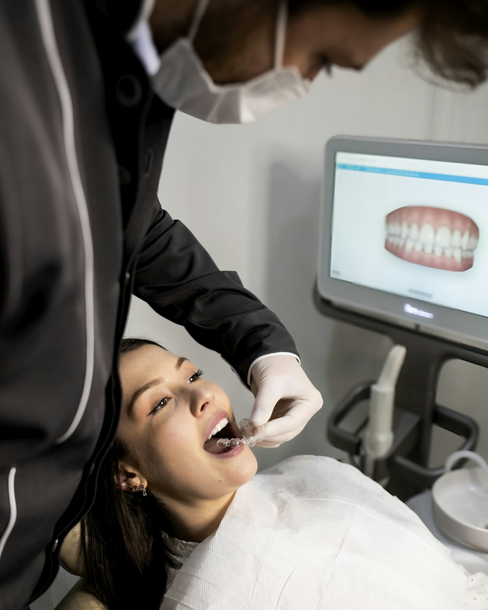
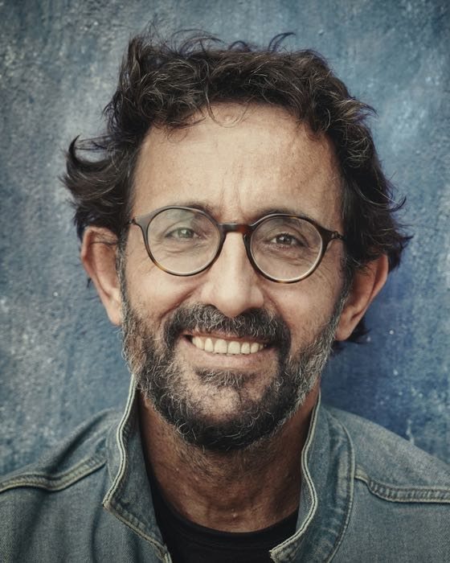
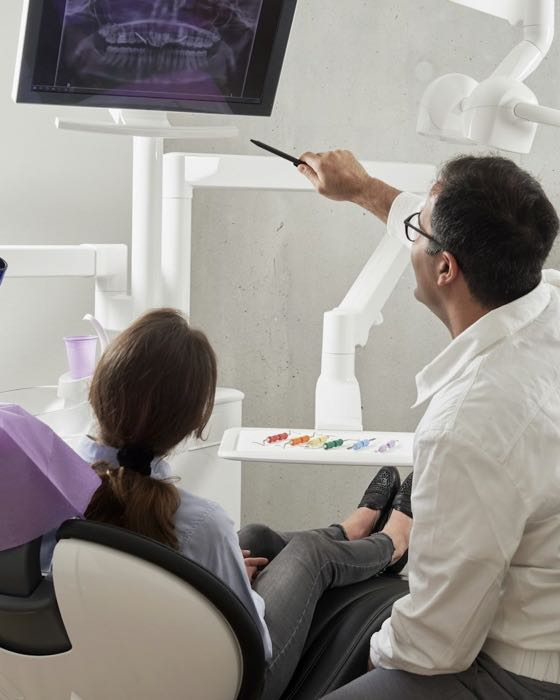
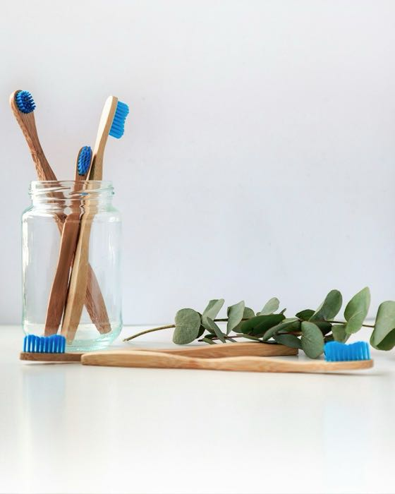
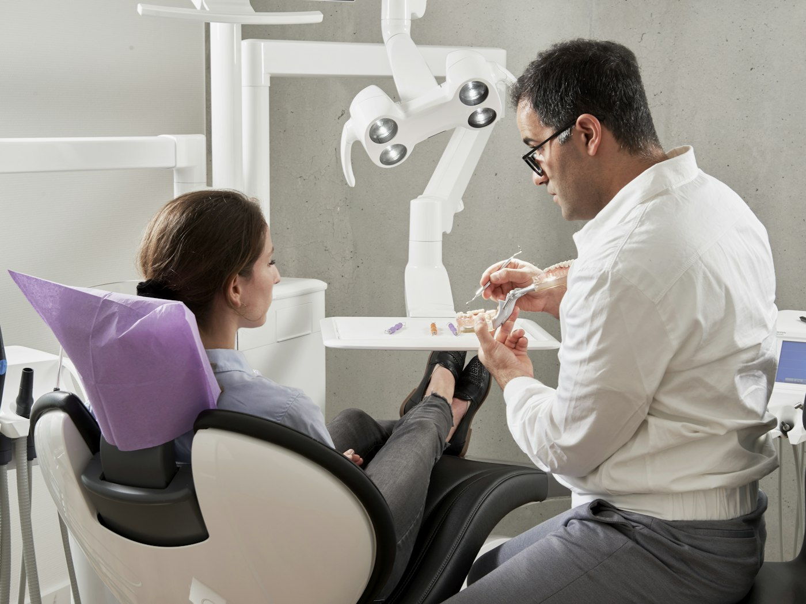
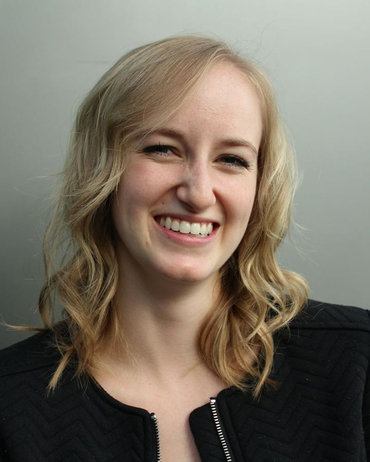
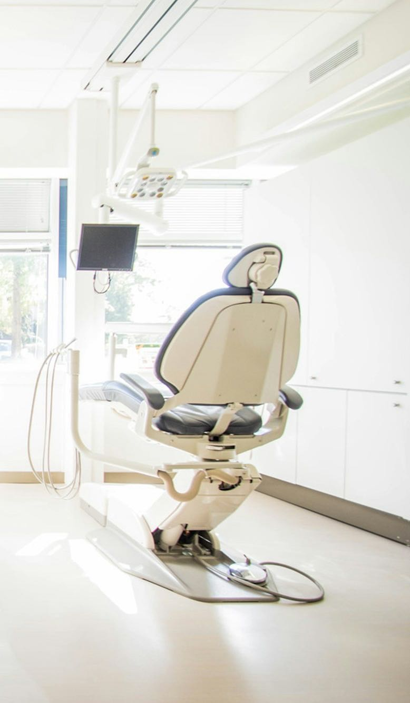
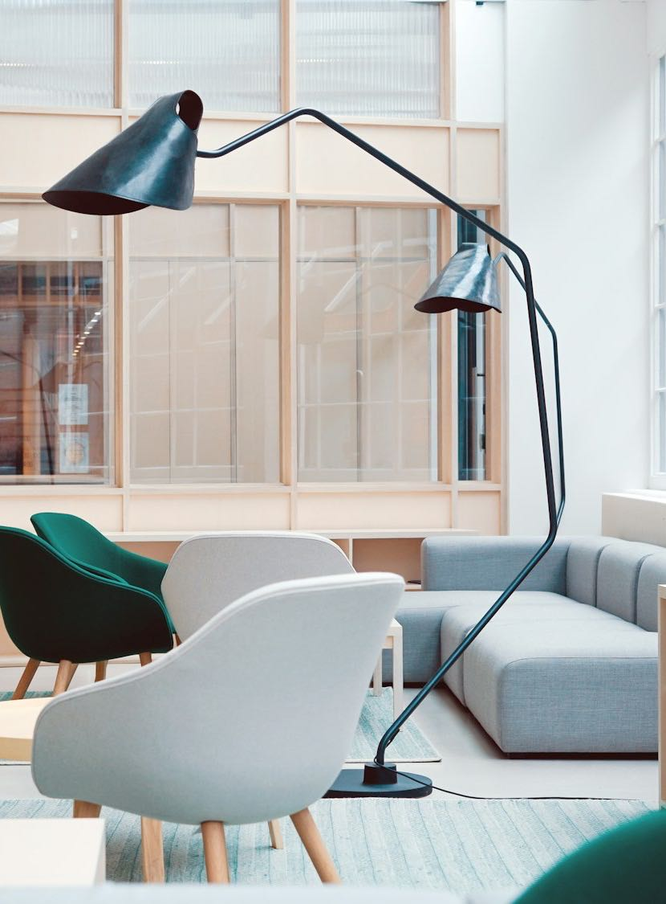

Odontologia integrada · Moema, São Paulo
Você vê seu novo sorriso antes de começar.
Escaneamento 3D, desenho digital e um mock-up provisório nos seus dentes: você testa o sorriso planejado antes do primeiro procedimento. Quatro especialistas, um endereço em Moema.
- Planejamento digital
Em todos os casos estéticos, antes de qualquer desgaste.
- Esterilização rastreável
Você vê o kit lacrado ser aberto na sua frente.
- Reembolso
Nota fiscal, relatório e radiografias para pedir reembolso ao seu plano.
Tratamentos
O que tratamos e quanto tempo leva.
Prazos médios, para você se planejar. O seu prazo exato sai na avaliação, depois dos exames e do planejamento digital.
-
Implantes
ImplantodontiaDr. Rafael Moretti
- Tempo médio
- 3 a 6 meses
- até a coroa definitiva
- Resolve
- A falta de um ou mais dentes, sem desgastar os dentes vizinhos e com uma fixação que não sai do lugar.
- Como funciona
- Um pino de titânio faz o papel da raiz e recebe uma coroa de porcelana. Com cirurgia guiada, ele vai para a posição definida no planejamento.
-
Lentes de contato dental
DentísticaDra. Beatriz Lacerda
- Tempo médio
- 2 a 3 consultas
- em cerca de 3 semanas
- Resolve
- Dentes manchados, desgastados, pequenos ou com espaços entre eles.
- Como funciona
- Lâminas de porcelana de 0,2 a 0,5 mm coladas na face da frente, com desgaste mínimo ou nenhum. Você aprova o formato antes, no mock-up.
-
Alinhadores invisíveis
OrtodontiaDra. Luiza Fontes
- Tempo médio
- 6 a 18 meses
- conforme a complexidade
- Resolve
- Dentes tortos, apinhados ou separados, e mordida que não encaixa.
- Como funciona
- Placas transparentes trocadas a cada 1 ou 2 semanas, cada uma com um pequeno movimento planejado no computador. Saem para comer e escovar.
-
Clareamento
DentísticaDra. Beatriz Lacerda- Tempo médio
- 2 a 3 sessões
- no consultório · caseiro: 2 a 3 semanas
- Resolve
- Dentes amarelados pelo tempo ou escurecidos por café, chá, vinho e cigarro.
- Como funciona
- Gel clareador no consultório, em casa com moldeira sob medida, ou os dois combinados. A cor é medida na escala VITA no início e no fim.
-
Gengiva
PeriodontiaDr. Caio Albuquerque
- Tempo médio
- 2 a 4 sessões
- e manutenção a cada 3 a 6 meses
- Resolve
- Sangramento ao escovar, gengiva retraída, mau hálito que não passa, dente mole.
- Como funciona
- Raspagem profunda e controle da inflamação. Se a gengiva já retraiu, um enxerto cobre a raiz exposta.
-
Canal
EndodontiaDr. Caio Albuquerque
- Tempo médio
- 1 a 2 sessões
- de 60 a 90 minutos cada
- Resolve
- Dor forte, sensibilidade que não passa, dente que escureceu por dentro.
- Como funciona
- Limpeza e vedação dos canais internos do dente, com microscópio e localizador eletrônico. Salva o dente em vez de extrair.
-
Prevenção e limpeza
Clínica geraltoda a equipe
- Tempo médio
- 50 minutos
- a cada 6 meses
- Resolve
- Tártaro, manchas de superfície e problemas pequenos, pegos enquanto ainda são simples.
- Como funciona
- Profilaxia, jato de bicarbonato, flúor e fotos padronizadas para comparar cada revisão com a anterior.
Planejamento digital
Primeiro no computador. Depois na sua boca.
Todo caso estético segue as mesmas quatro etapas, e o tratamento só começa na última. Nenhuma delas usa aquela massa de moldagem.
No monitor, a arcada escaneada em 3D. É dela que sai todo o planejamento, do alinhador à lente.
-
Uma ponteira do tamanho de uma escova passa pelos dentes e monta sua boca em 3D no monitor, em uns 5 minutos. Sem moldeira com massa, sem ânsia.
-
Nos implantes e nas cirurgias, a tomografia mostra osso, raízes e nervos em três dimensões. As fotos, feitas em todos os casos, seguem sempre o mesmo ângulo e a mesma luz, para comparar cada etapa sem achismo.
-
Desenhamos o sorriso a partir das proporções do seu rosto. Depois, uma resina provisória reproduz o desenho nos seus dentes: você se olha no espelho, fala, sorri e aprova. Ou pede ajuste.
-
O plano aprovado vira guia. Nos implantes, um guia cirúrgico impresso em 3D posiciona cada pino no ponto planejado na tomografia, com corte menor e recuperação que costuma ser mais rápida.
Clareamento · escala de cor
Qual é a cor do seu sorriso hoje?
Para medir a cor dos dentes, o dentista usa a escala VITA clássica: 16 tons, do mais claro ao mais escuro. Escolha o que mais se parece com os seus dentes e veja até onde um clareamento costuma chegar.
Clique, arraste ou use as setas do tecladoToque ou deslize o dedo sobre a escala
Use as setas para trocar o tom. Home vai para o mais claro e End para o mais escuro.
A3
Posição 9 de 16 · matiz A, castanho-avermelhado
de B2 a C2
De 2 a 6 tons mais claros na escala. Quanto clareia de fato, só a avaliação diz.
Combinado
Uma sessão no consultório para dar a partida e o caseiro supervisionado por mais 2 semanas. É o caminho que mais indicamos.
SensibilidadeNas primeiras 48 h, os dentes podem ficar sensíveis. Isso costuma passar sozinho ou com gel dessensibilizante.
Antes de tudo, avaliaçãoQuanto o dente clareia, só a avaliação diz. Manchas de medicamento, como a tetraciclina, respondem pouco ao gel, e restaurações, lentes e coroas não mudam de cor.
Medo de dentista?
Levantou a mão, a gente para.
Muita gente que chega aqui passou anos adiando. Não é frescura, e você não precisa fingir que está tudo bem. A consulta é montada para ir no seu ritmo.

- Óxido nitroso
Sedação consciente
Você respira uma mistura leve pelo nariz e fica relaxado, acordado o tempo todo. O efeito passa em minutos e, na maioria dos casos, dá para voltar dirigindo.
- Fluxo controlado
Anestesia computadorizada
O aparelho libera o anestésico gota a gota, na pressão certa. A agulha é fininha e a picada é bem mais suave que a da seringa comum.
- Sem pressa de agenda
Consultas mais longas
Reservamos tempo de sobra. Se precisar parar, respirar ou conversar, cabe no horário.
- Mão levantada
Um sinal combinado para pausar
Antes de começar, combinamos um gesto. Você levanta a mão e a gente para na hora, sem pergunta e sem cara feia.
- Sua playlist
Fone com cancelamento de ruído
O barulho do motorzinho fica do lado de fora. Traga sua playlist ou seu podcast, ou fique em silêncio.
- Antes de fazer
Cada passo explicado
Nada acontece de surpresa. Você sabe o que vamos fazer, por quê e quanto tempo leva, antes de a gente começar.
Quatro especialistas, no mesmo corredor.
Implante, lente, alinhador, gengiva e canal discutidos na mesma mesa. Você não é encaminhado para outra clínica nem precisa repetir sua história.
-
Dr. Rafael Moretti
CRO-SP 98.765
Especialista em Implantodontia
Responsável técnicoPlaneja cada implante na tomografia antes de encostar no paciente. Vem de bicicleta quase todo dia.
-
Dra. Beatriz Lacerda
CRO-SP 112.408
Especialista em DentísticaDesenha cada lente a partir do seu rosto e do seu jeito de sorrir. Faz cerâmica nas horas vagas, o que explica a obsessão por cor.
-

Dra. Luiza Fontes
CRO-SP 121.937
Especialista em OrtodontiaUsou aparelho fixo dos 12 aos 15 anos e se lembra de cada ajuste. Por isso mostra a simulação do seu caso antes de você escolher entre fixo e alinhador.
-
Dr. Caio Albuquerque
CRO-SP 109.552
Especialista em Periodontia e EndodontiaÉ o dentista que os pacientes com medo pedem pelo nome. Explica tudo duas vezes, se for preciso.
Alvor Odontologia IntegradaCRO-SP EPAO 14.872Responsável técnico: Dr. Rafael MorettiCRO-SP 98.765
Clara, silenciosa e a 4 minutos do metrô.
Luz natural nos consultórios, sala de espera sem televisão gritando e tudo pensado para quem chega de metrô, de carro ou de cadeira de rodas.


- Consultórios
- 5, todos com luz natural.
- Esterilização
- Central própria, autoclave classe B e rastreio por lote. O kit lacrado é aberto na sua frente.
- Metrô
- estação Eucaliptos, Linha 5‑Lilás: 4 min a pé.
- Carro
- Manobrista na porta, de segunda a sábado.
- Acessibilidade
- Entrada sem degraus, elevador e consultório no térreo.
- Horário
- Seg a sex, 8h às 20h · Sáb, 8h às 13h. Urgência para pacientes em tratamento.
Avaliações no Google
4,9
Trechos de avaliações públicas no Google. Escolhemos três que falam do que mais ouvimos por aqui: medo, escaneamento e horário cumprido.
“Eu tinha pavor. Fiquei nove anos sem ir ao dentista. Combinaram comigo um sinal pra parar e eu usei duas vezes. Ninguém revirou os olhos.”
“O escaneamento leva uns minutos e não tem aquela massa que dá ânsia. Vi no monitor como as lentes iam ficar e ainda testei na boca antes de fechar.”
“Marcaram 18h30 e às 18h32 eu já estava na cadeira. Com dois filhos pequenos, isso muda tudo.”
Perguntas que ouvimos toda semana.
Não achou a sua? Escreva para a gente. Quem responde é a Camila, da recepção, de segunda a sábado, no horário da clínica.
Como é a primeira avaliação?
Cerca de uma hora com o especialista do seu caso. Exame clínico, fotos e escaneamento 3D quando fizer sentido. Você sai com o diagnóstico explicado e recebe depois o plano de tratamento por escrito, com etapas e prazos, para decidir com calma.
Quanto custa o tratamento?
Depende do que o seu caso pede, e por isso não divulgamos valores (o código de ética odontológica também não permite). Depois da avaliação, você recebe o plano por escrito, com cada etapa e o valor de cada uma, e decide sem pressa.
Implante dói?
A cirurgia é feita com anestesia local e, se você quiser, com sedação por óxido nitroso. Durante o procedimento, em geral, o que se sente é só pressão. Nos dias seguintes, um incômodo leve é comum e costuma ser controlado com analgésico simples. Com cirurgia guiada, o corte é menor.
Quanto tempo dura uma lente de porcelana?
Com revisões e bons hábitos, costuma durar de 10 a 15 anos, muitas vezes mais. A porcelana não mancha. O que pede atenção é a gengiva em volta e o hábito de ranger os dentes, que tratamos com placa para dormir quando é o caso.
Clareamento enfraquece o dente?
Não. O gel age nos pigmentos de dentro do dente, sem desgastar nem amolecer o esmalte. A sensibilidade temporária é comum nas primeiras 48 h, e a gente controla com gel dessensibilizante.
Vocês atendem convênio?
Atendemos particular. Entregamos nota fiscal e a documentação completa (relatório, radiografias e códigos dos procedimentos) para você pedir reembolso ao seu plano. A recepção ajuda a montar o pedido.
Atendem urgência?
Sim, para quem está em tratamento: há um número de urgência e retorno no mesmo dia. Se você ainda não é paciente e está com dor, ligue para (11) 5051-3390. Encaixamos assim que houver horário.
Alinhador funciona para casos complexos?
Hoje resolve a maioria dos casos, inclusive muitos que antes só tinham solução com aparelho fixo. Na avaliação, a Dra. Luiza mostra a simulação do seu caso no computador e diz com franqueza se o alinhador é a melhor escolha ou não.
Comece por uma avaliação.
Preencha em meio minuto. A gente monta a mensagem e você envia pelo WhatsApp, no seu tempo. Respondemos de segunda a sábado, no horário da clínica.
- Endereço
- Av. Ibirapuera, 2.332 – Moema
São Paulo – SP, 04028-002
Como chegar - Telefone
- (11) 5051-3390
- Horário
- Seg a sex, 8h às 20h
Sáb, 8h às 13h - @alvor.odonto
Tudo certo. Falta só enviar.
Confira o texto. Ao tocar no botão, o WhatsApp abre com ele preenchido e você decide se manda.